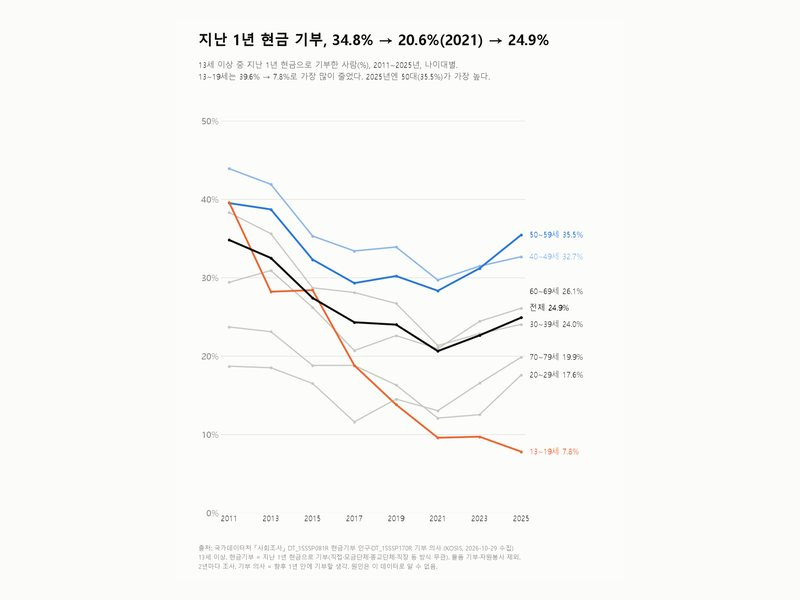

카테고리
가족·사회
14편 · 최신 글부터
 10.2%아빠 육아휴직 사용률 10.2%, 처음 두 자릿수(2024 잠정)육아휴직통계 2015~2024
10.2%아빠 육아휴직 사용률 10.2%, 처음 두 자릿수(2024 잠정)육아휴직통계 2015~2024 33.2세첫아이 낳는 엄마 평균 33.2세, 1993년보다 7.0세 늦어졌다출생통계 1990~2025
33.2세첫아이 낳는 엄마 평균 33.2세, 1993년보다 7.0세 늦어졌다출생통계 1990~2025 36.6%이혼 중 결혼 20년 이상 36.6%, 4년 이하 16.3%혼인·이혼통계 1990~2025
36.6%이혼 중 결혼 20년 이상 36.6%, 4년 이하 16.3%혼인·이혼통계 1990~2025 48.8%신혼부부 맞벌이 59.7%, 아이 없는 부부 48.8%신혼부부통계 2015~2024
48.8%신혼부부 맞벌이 59.7%, 아이 없는 부부 48.8%신혼부부통계 2015~2024 12.0%2025년 주소 옮긴 사람 100명당 12.0명, 2000년엔 19.0명인구이동률 1970~2025
12.0%2025년 주소 옮긴 사람 100명당 12.0명, 2000년엔 19.0명인구이동률 1970~2025 158분배우자 있는 남녀 가사·돌봄 차이, 하루 258분 → 158분생활시간조사 1999~2024
158분배우자 있는 남녀 가사·돌봄 차이, 하루 258분 → 158분생활시간조사 1999~2024 10.0%20대 10.0%가 이주배경, 대부분 외국인나이대별 이주배경인구 2023~2025
10.0%20대 10.0%가 이주배경, 대부분 외국인나이대별 이주배경인구 2023~2025 26개월 연속출생아 26개월 연속 증가, 최근 1년 27.9만 명인구동향 월별
26개월 연속출생아 26개월 연속 증가, 최근 1년 27.9만 명인구동향 월별 83.6% → 78.8%우울할 때 이야기할 사람 있다, 83.6% → 78.8%사회조사 사회적 관계망·외로움
83.6% → 78.8%우울할 때 이야기할 사람 있다, 83.6% → 78.8%사회조사 사회적 관계망·외로움
34.8% → 24.9%지난 1년 현금 기부, 34.8% → 20.6% → 24.9%사회조사 기부 52.5%'결혼은 해야 한다' 62.7% → 48.1% → 52.5%사회조사 결혼에 대한 견해
52.5%'결혼은 해야 한다' 62.7% → 48.1% → 52.5%사회조사 결혼에 대한 견해 13.8% → 24.3%혼자 사는 20대, 2015년 13.8% → 2025년 24.3%나이대별 1인가구
13.8% → 24.3%혼자 사는 20대, 2015년 13.8% → 2025년 24.3%나이대별 1인가구 21 / 25구서울 21개 구는 '20대만 들어오는 동네'였다2015~2025년 연령별 순이동
21 / 25구서울 21개 구는 '20대만 들어오는 동네'였다2015~2025년 연령별 순이동 +35,937명서울은 사람이 빠져나가는데, 20대는 들어왔다2025년 자치구별 20대 순이동
+35,937명서울은 사람이 빠져나가는데, 20대는 들어왔다2025년 자치구별 20대 순이동